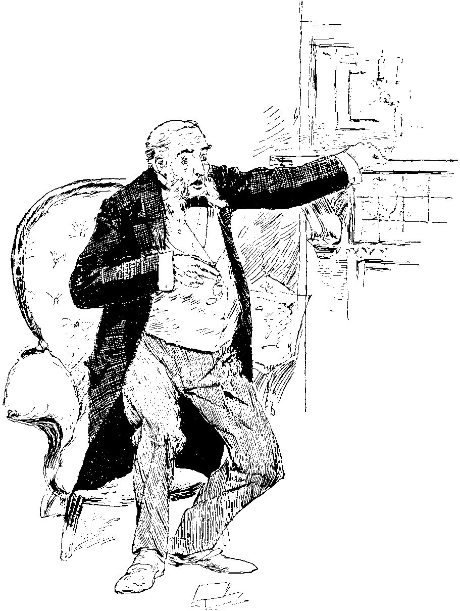
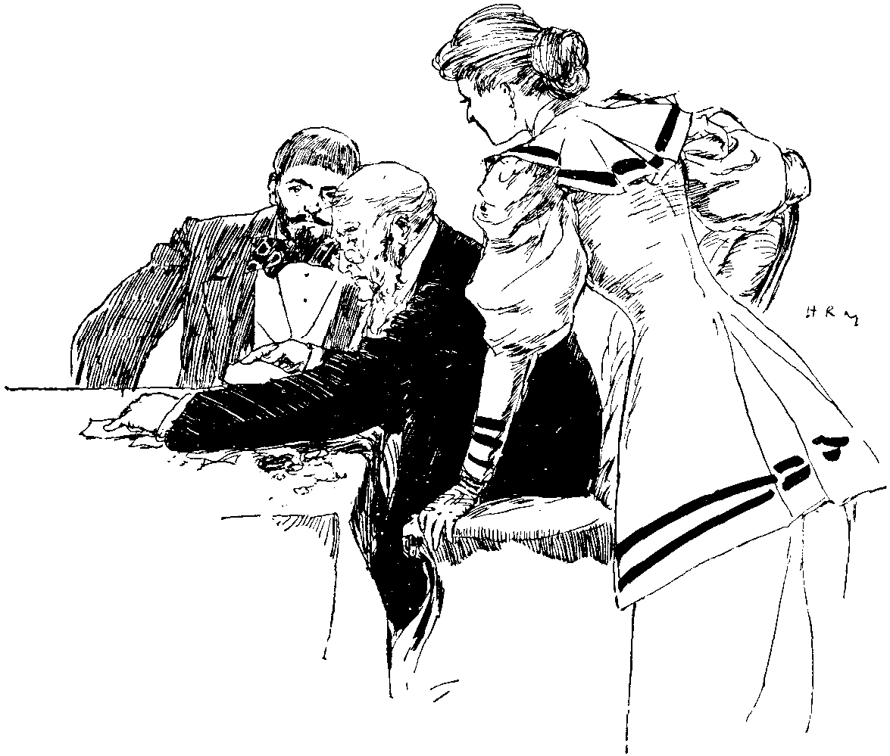
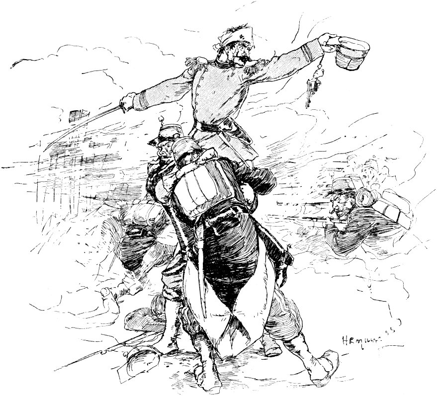
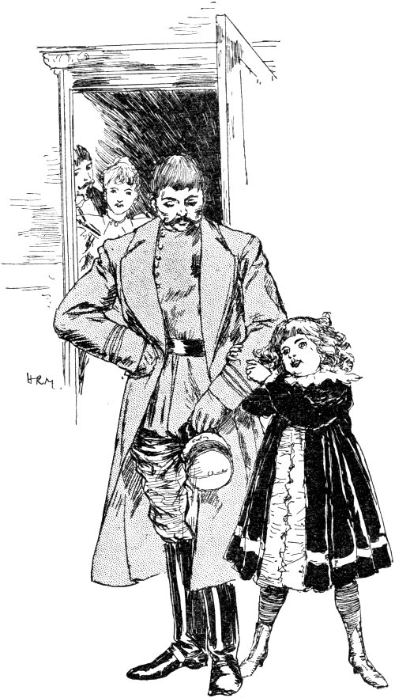

The Family Name.
From the French of HENRI MALIN
{kind=link}
I.
One afternoon, Mons. Sauvallier received from his younger son—a lieutenant in garrison at Versailles—the following letter:
"Versailles, May 25, 1883.
"MY DEAR FATHER,
"A terrible catastrophe has befallen me, one which will be a blow to you also. I am writing about it, because I dare not face you; I deserve never to see you again!
"Led astray by a companion, I have been gambling on the Bourse, and am involved in yesterday's crash, in which so many fortunes have been suddenly swamped.
"I scarcely dare to tell you how much I have lost. Yet I must do so, for the honour of the Sauvalliers is concerned. Alas! you will be all but ruined!
"I owe the sum of four hundred and sixty-eight thousand francs. Oh! what a miserable wretch I am!
"When I found that the smash was inevitable I went mad, and entered my room with the intention of putting an end to my wretched existence. But more sober thoughts prevailed: I changed my mind. I had heard that officers were being recruited for Tonquin, and I determined to volunteer for this service. My suicide would not have bettered matters; it would rather have left an added blot upon our family name. Out there, at all events, my death may be of use; it will cause you no shame, and may perhaps move you to a little compassion for your guilty, but most unhappy and despairing son, who suffers agonies at thought of the trouble he has brought upon you, and who now bids you an eternal farewell!
"CAMILLE SAUVALLIER."
Mons. Sauvallier, who had been a widower for several years past, was one of the most respected business-men of Paris, the owner of a foundry, a judge of the Tribunal of Commerce, and an officer of the Legion of Honour. He had two sons: Camille, the lieutenant: and August, an artist of some originality, who was the husband of a charming wife, and the father of a little six-year-old maiden named Andrée. Mons. Sauvallier had always deterred his sons from embarking in trade. He had shrunk from exposing them to the ups and downs of business life, its trying fluctuations, its frequent cruel mischances. He had arranged that at his death his estate should be realized: he did not wish the business to be sold outright, in case it should pass into the hands of strangers who might sully the hitherto unblemished name of Sauvallier.
And now, in spite of all his precautions, a disaster greater than any he had dreamed of had overwhelmed him.

"HE ROSE WITH DIFFICULTY."
{kind=link}
Leaning back wearily in his arm-chair, with haggard eyes he re-read his son's letter, in order to assure himself that he was not dreaming. Yes! It was too true! Camille had ruined, perhaps dishonoured, him! It seemed as though the objects that surrounded him—the very walls and furniture—were no longer the same! As one staggering beneath a too heavy burden, he rose with difficulty, his limbs stiff, yet his whole frame agitated; then he sank back into his chair, with two big tears flowing down his cheeks.
By hook or by crook he must procure the sum, and the debt should be paid to-morrow. It would be a difficult task. The wealth of the manufacturer consists of material and merchandise. Would so hurried a realization yield the necessary amount? He could not tell. Again, when this debt was paid, would he be able to fulfil his engagements? Bankruptcy stared him in the face. A Sauvallier bankrupt? An officer of the Legion of Honour, a judge of the Tribunal of Commerce, insolvent? Never! He would die first!
But before it came to that, he would try every expedient: he would strain every nerve.
So all night long the poor man planned and calculated, and in the morning, with heavy heart, proceeded to put his plans into effect.
He visited his numerous friends and told them of his trouble, which elicited much sympathy. In order to help, some made large purchases of him, paying ready money, others advanced or lent him money. All day until the evening he was running about Paris collecting cheques, bank-notes, and orders.

"HE NOW BROUGHT THE SUM THUS GAINED."
{kind=link}
In the evening, as he sat down to ascertain the result of the day's efforts. Auguste came in with his wife and Andrée. To help his father, the artist had parted with some of his pictures at a sacrifice, and he now brought the sum thus gained.
Andrée, unconscious of the trouble of her elders, began to play with her "Jéanne," a doll nearly as big as herself, which her grandfather had given her some time previously, and which she loved, she said, "as her own daughter."
But the child soon observed the sadness of her parents and her dear grandfather, and she looked with earnest, inquiring gaze from one to the other, trying to discover what was amiss. She saw her father lay down his pocket-book, she watched her mother place upon the table her bracelets, necklaces, ear-rings, and rings, while Mons. Sauvallier thanked them with tears in his eyes. With a very thoughtful, serious expression on her little face, the child turned towards her doll, embraced it with the emotional fervour of a last adieu, then carried it to her grandfather, saying, in sweet, resigned tones: "Take it, grandpapa! You can sell her, too."
Mons. Sauvallier wept upon the neck of his little granddaughter, murmuring, "You also, my angel? Oh, that miserable boy!"
II.
Thus Camille's debt was paid, and the honour of the Sauvalliers was saved. But the father's fortune had gone!
He was able, however, to retain his business. He said to himself that he must work still, in spite of his threescore years; that he must labour incessantly, with the anxious ardour of those beginning life with nothing to rely upon save their own exertions.
He reduced his expenses, gave up his own house and went to live with his son, sold his carriage and horses, discharged his servants, and stinted himself in every possible way. Auguste became his designer, Auguste's wife his clerk. Each accepted his or her share of the burden bravely and uncomplainingly, as an important duty which must at any cost be accomplished.
The conduct of this old man, so jealous for his name, so upright, so courageous in misfortune, excited profound sympathy. All who knew him pitied him; orders flowed in, and soon a quite exceptional activity pervaded the establishment from basement to roof, inspiring Mons. Sauvallier with a little hope. But one persistent fear disturbed his sleep, and troubled his waking hours. It was that some day he might hear that Camille had been gambling again, and was once more in debt. He had forbidden all mention of his erring son, but the thought of him was ever present, and lay like an incubus upon his heart.
One year passed, then another. The foundry still flourished; work positively raged therein. It had no rest; it also, as though endowed with a conscience, did its duty nobly. Its furnaces glowed like ardent eyes; its mighty puffing and snorting shook the ground: the molten metal, red and fuming, flowed from its crucibles like blood from its body. At an early hour of the morning was heard its piercing summons to the work-people, and all the night long its glare illuminated the sky.
III.
The campaign of Tonquin was in full swing. In the midst of an unknown country, harassed by innumerable difficulties, the French soldiers were contending painfully with an irrepressible, ever-rallying foe. The smallest success served to excite the popular patriotism, and all awaited impatiently the tidings of a decisive victory.
One morning, Auguste, looking very pale, entered his father's office, and handed him a newspaper. There, amongst "Latest intelligence," Mons. Sauvallier read the following:—

"LEADING THEM ON TO THE ASSAULT."
{kind=link}
"From the camp entrenched at Dong-Song. February 12th, 1885.—To-day, Captain Sauvallier attacked the enemy with extreme vigour, fought all the day against considerable forces, and captured successively three redoubts. In attacking the last of the three, his soldiers, overpowered by numbers, were about to retreat; but, although seriously wounded in the head and thigh, the gallant officer, borne by two men, succeeded in rallying his company and leading them on to the assault. His conduct was admirable, but his condition is hopeless. I have attached the cross to his breast. This brilliant feat of arms will enable me to enter Lang-Son tomorrow.—GENERAL BRIERE DE L'ISLE."
Upon reading these words, Mons. Sauvallier felt a strange emotion, in which anguish mingled with joy. For a moment he was silent; then he said to his son, "You think that it is he? He is, then, a captain?"
He read the despatch again, then murmured softly: "The cross! Condition hopeless!" And a tear rolled down his cheek.
Two hours later the family received a formal intimation of Camille's deed and state from the Minister of War, and on the following day all the journals were praising Captain Sauvallier, son of the respected founder, of Grenelle. And now they gave details. Camille, it appeared, had been nominated captain a few months back. Throughout the campaign he had distinguished himself by his imperturbable coolness under fire, and reckless scorn of the death which he seemed to seek.
His act of heroic energy stirred the enthusiasm of Press and populace, and the name of Sauvallier was on every lip. Camille's portrait appeared in the shop-windows; the illustrated journals depicted him before the redoubt, carried upon the shoulders of two men, his sword pointed towards the enemy, encouraging his soldiers by his voice, gesture, and look, his forehead bound with a handkerchief, and his face bleeding.
Mons. Sauvallier could not go out of doors without seeing his son's presentment. From the news-stalls of the boulevards, the corners of the streets, the publishers' shop-fronts, a ubiquitous Camille watched him pass, and seemed to follow him with his eyes. Almost at each step the father received congratulations, while complimentary letters and cards covered his table to overflowing. But, alas! the telegrams which he received daily from Tonquin left him little hope that he should ever again behold in the flesh this dear son, of whom now he was so proud.

"HERE HE IS!"
{kind=link}
One morning, three months later, Mons. Sauvallier was at work in his office, when the door opened softly, and disclosed Andrée's curly head. The little one seemed in high spirits, her eyes sparkled with glee. "See, grandfather, here he is!" she said, and led into the room Captain Sauvallier.
Auguste and his wife followed the pair. Mons. Sauvallier, taken completely by surprise, rose quickly from his chair, then stood motionless, overcome by his emotion. He saw before him Camille, with the scar upon his forehead, and the cross upon his breast—Camille, the hero of the hour, who had shed such lustre upon the family name!
Timid and embarrassed, like a child who has been guilty of a fault, Camille stood with bowed head, and when he saw how much his father had aged, he knew that it was his conduct which had wrought the sad change, and his contrition was deepened tenfold.
But as he was about to throw himself at his father's feet, Mons. Sauvallier, with a sudden movement, clasped him to his breast, exclaiming, in a voice full of tears, "No, Camille! in my arms! in my arms!"
Father and son, locked together in closest embrace, mingled their sobs, while Auguste and his wife, looking on, wept in sympathy.
The silence was broken by Andrée. The child had vanished for a moment, but speedily reappeared, fondling her precious doll, which, it is needless to say, had not been sold. Holding it out to the captain, she said in her liveliest manner: "Here is Jeanne, uncle! You remember her? Give her a kiss directly! Don't you think that she has grown?"